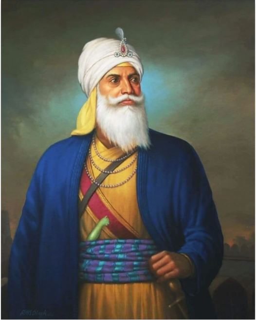

Jassa Singh Ahluwalia

Jassa Singh Ahluwalia (1718-1783) was a prominent Sikh leader and military commander
during the 18th century in India. He played a crucial role in the establishment of Sikh
sovereignty and the defense of Sikh interests in the turbulent period of the Mughal
Empire's decline. Born into the Ahluwalia clan in the village of Ahlu, near Lahore
(now in present-day Pakistan), Jassa Singh Ahluwalia inherited the legacy of his
ancestors, who were followers of Guru Nanak, the founder of Sikhism. He received
religious education and martial training from a young age, which prepared him for
the challenging times ahead. During the tumultuous period of the Mughal Empire's decline,
Jassa Singh Ahluwalia became a key figure in organizing and leading the Sikh community
against oppressive Mughal rulers and other external forces. He emerged as one of the
foremost Sikh warriors and statesmen, known for his military skills, strategic acumen,
and diplomatic prowess. Jassa Singh Ahluwalia played a pivotal role in the formation of
the Dal Khalsa, a confederacy of twelve Sikh misls (confederacies) that united to resist
foreign invasions and safeguard Sikh interests. He became the leader of the Ahluwalia
Misl and commanded a considerable military force. Under Jassa Singh Ahluwalia's leadership,
the Sikh forces fought numerous battles against Afghan and Mughal armies. One of his
significant victories was the Battle of Sirhind in 1764 when he defeated the combined
forces of the Mughal governor of Sirhind and Afghan invaders. This victory established
Sikh dominance in the region and solidified Jassa Singh Ahluwalia's reputation as a
capable military commander. Jassa Singh Ahluwalia was also involved in negotiating with
other regional powers and forging alliances to protect Sikh interests. He had cordial
relations with the Marathas and maintained diplomatic ties with Afghan rulers, while
also countering the influence of the British East India Company in Punjab. In addition
to his military and diplomatic endeavors, Jassa Singh Ahluwalia was a patron of Sikh
institutions and contributed to the development of Sikhism. He supported the construction
of gurdwaras (Sikh places of worship) and promoted the principles of Sikh faith and
equality. Jassa Singh Ahluwalia passed away in 1783, leaving behind a lasting legacy as
a courageous Sikh leader who played a vital role in shaping Sikh history. His contributions
to the Sikh community and his efforts to protect Sikh interests in a tumultuous era are
remembered and revered by Sikhs to this day.